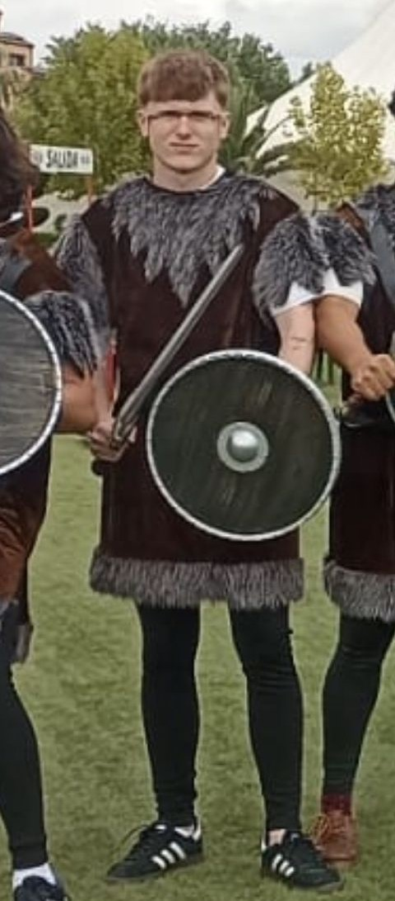
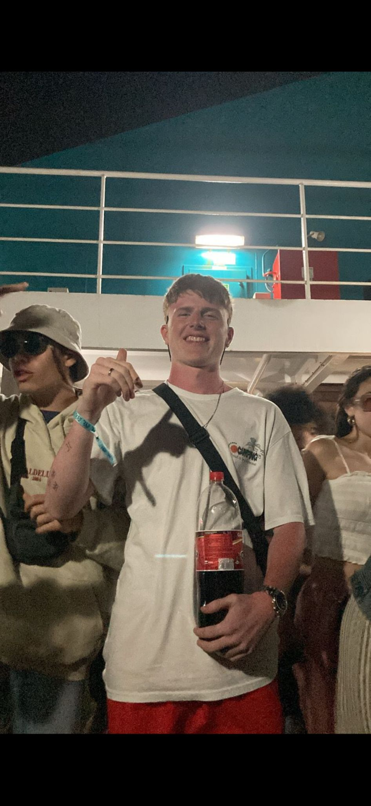
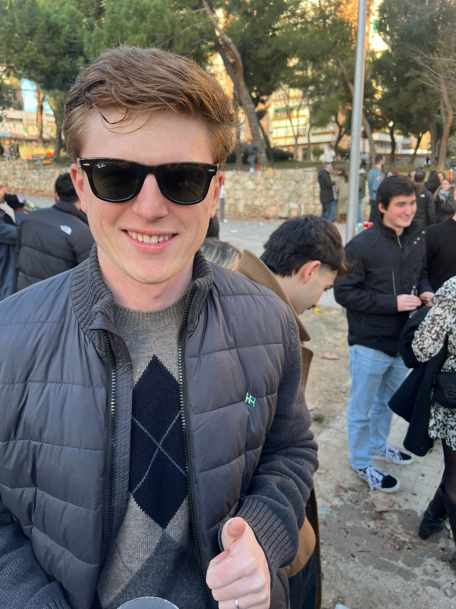
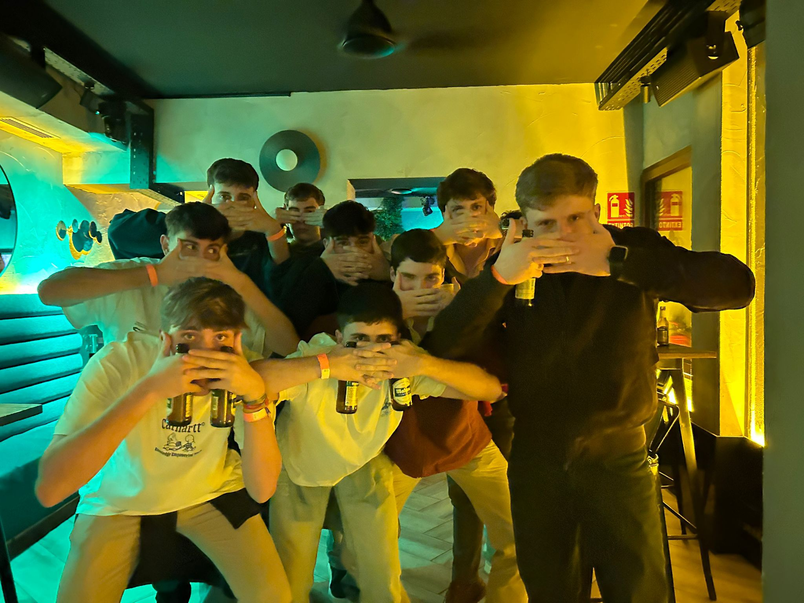

Erik
Defensa | Dorsal 2
Erik:
2blekk: el guiri del equipo. Pelirrojo, fuerte, mitad sueco mitad malagueño… en conclusión uno de los jugadores más carismáticos del equipo, que no del campo, ya que es difícil recordarle en el terreno de juego. A pesar de ello, forma parte del equipo desde el primer día, aportando siempre que aparece su gran presencia y muchas risas.
Como jugador, cuenta la leyenda que era un defensa robusto y fuerte, de los que se pega al delantero como una lapa y no le deja ni moverse. Tiene los pies bastante peleados pero aun así se las ingenió para meter algún gol de delantero pichichi. Aunque su último gol fue practicamente el siglo pasado, todos conocemos su celebración: la máscara de Gyokeres.
2blekk: el guiri del equipo. Pelirrojo, fuerte, mitad sueco mitad malagueño… en conclusión uno de los jugadores más carismáticos del equipo, que no del campo, ya que es difícil recordarle en el terreno de juego. A pesar de ello, forma parte del equipo desde el primer día, aportando siempre que aparece su gran presencia y muchas risas.
Como jugador, cuenta la leyenda que era un defensa robusto y fuerte, de los que se pega al delantero como una lapa y no le deja ni moverse. Tiene los pies bastante peleados pero aun así se las ingenió para meter algún gol de delantero pichichi. Aunque su último gol fue practicamente el siglo pasado, todos conocemos su celebración: la máscara de Gyokeres.
Galería


